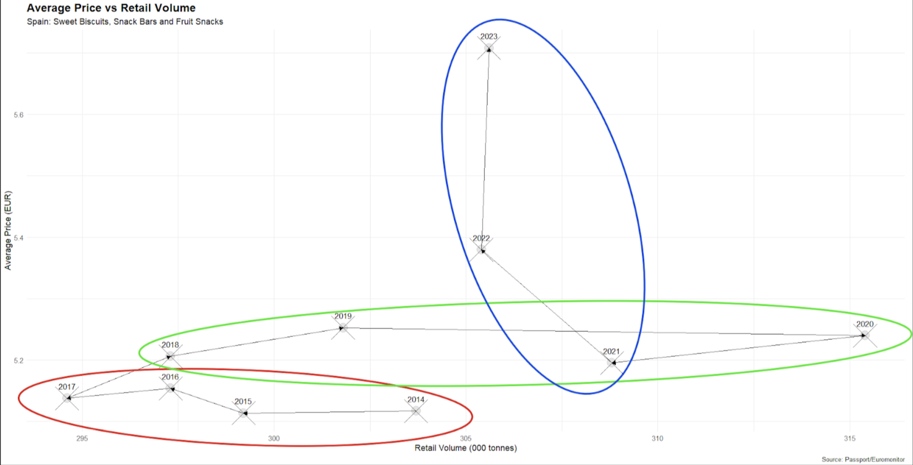

Supply
The analysis of supply is crucial for understanding its impact on prices, market equilibrium, and overall economic dynamics. By examining supply, it becomes possible to gain a deeper insight into how the quantity of goods and services produced by firms responds to changes in market conditions. This, in turn, helps explain price fluctuations, the establishment of market equilibrium, and how various factors, such as input costs, technology, and market expectations, influence production decisions. A comprehensive understanding of supply dynamics is essential for assessing the efficiency and stability of markets, as well as for predicting potential shifts in economic conditions.
Active enterprises, Average Price

The most intriguing insight is perhaps the relation between retail volumes and average prices, offering a comprehensive view of supply trends throughout the year. As becomes evident from the graph, the last 10 years highlight three distinct subperiods. The first (2014–2017, circled in red) reveals a sharp decline in retail volumes while prices remain nearly constant, indicating market contraction. The second (2018–2020, circled in green) shows the opposite trend, pointing to an expansionary phase. Finally, the last period (2021–2023, circled in blue) depicts a steep price rise with stable volumes, reflecting high inflation after the COVID pandemic.
library(tidyverse)
data <- data.frame(
Year = c(2014, 2015, 2016, 2017, 2018, 2019, 2020, 2021, 2022, 2023),
Retail_Volume = c(303.7, 299.2, 297.3, 294.6, 297.3, 301.8, 315.4, 308.8, 305.4, 305.6),
Retail_Value_RSP = c(1554, 1529.9, 1532.2, 1513.5, 1547.7, 1585.2, 1652.6, 1604.3, 1642.9, 1744.3)
)
data$Average_Price <- data$Retail_Value_RSP / data$Retail_Volume
invisible(ggplot(data, aes(x = Retail_Volume, y = Average_Price)) +
geom_point(size = 6, shape = 21, color = "gray", alpha = 0.4, fill = "gray") +
geom_point(size = 15, shape = 4, color = "black") +
geom_text(aes(label = Year), color = "black", size = 4, vjust = -1.5) +
geom_segment(aes(xend = lead(Retail_Volume), yend = lead(Average_Price)),
arrow = arrow(length = unit(0.2, "cm"), type = "closed"),
color = "black", size = 0.3, na.rm = TRUE) +
labs(
title = "Average Price vs Retail Volume",
subtitle = "Spain: Sweet Biscuits, Snack Bars and Fruit Snacks",
x = "Retail Volume (000 tonnes)",
y = "Average Price (EUR)",
caption = "Source: Passport/Euromonitor"
) +
theme_minimal() +
theme(
plot.title = element_text(size = 16, face = "bold", family = "serif",),
plot.subtitle = element_text(size = 12, family = "serif",),
axis.title = element_text(size = 12),
axis.text = element_text(size = 10),
))library(ggplot2)
library(tidyr)
library(dplyr)
data <- data.frame(
Sector = c("Manufacturing (C)", "Food (C10)", "Bakery (C107)", "Snacks (C1072)"),
X2014 = c(166.589, 22.445, 10.474, 674),
X2015 = c(166.936, 22.215, 9.870, 486),
X2016 = c(166.984, 22.537, 9.978, 503),
X2017 = c(168.717, 23.151, 10.279, 509),
X2018 = c(171.994, 24.437, 11.286, 580),
X2019 = c(171.281, 24.713, 11.698, 580),
X2020 = c(168.924, 24.654, 11.545, 595),
X2021 = c(173.843, 25.429, 11.952, 652),
X2022 = c(171.103, 25.003, 11.734, 661)
)
data$Sector <- factor(data$Sector, levels = c("Manufacturing (C)", "Food (C10)", "Bakery (C107)", "Snacks (C1072)"))
data_indexed <- data %>%
rowwise() %>%
mutate(across(X2014:X2022, ~ (.x / X2014) * 100)) %>%
ungroup()
data_long <- data_indexed %>%
pivot_longer(cols = starts_with("X"), names_to = "Year", values_to = "Index") %>%
mutate(Year = as.numeric(sub("X", "", Year))) # Remove "X" and convert to numeric
ggplot(data_long, aes(x = Year, y = Index, color = Sector)) +
geom_line(size = 1.5, alpha = 0.6) +
geom_point(size = 3, alpha = 0.7, shape = 21, fill = "white", stroke = 0.8) +
scale_color_manual(values = c("#FFB3BA", "#B2E1FF", "#B5EAD7", "#C7CEEA")) +
theme_minimal() +
labs(
title = "Active Enterprises",
subtitle = "Index (2014=100)",
x = "Year",
y = "Index",
color = "Sector",
caption = "Sources: Eurostat (sbs_na_ind_r2 V11110, sbs_ovw_act ENT_NR)"
) +
geom_hline(yintercept = 100, linetype = "dashed", color = "gray50") +
theme(
plot.title = element_text(hjust = 0.5, family = "serif", face = "bold"),
plot.subtitle = element_text(hjust = 0.5, family = "serif"),
legend.position = "right"
) +
scale_x_continuous(breaks = seq(2014, 2022, by = 1), labels = as.character(seq(2014, 2022, by = 1))) 
These observations align closely with the prior analysis made in section I. To delve deeper into the analysis of the Spanish market for sweet biscuits, snack bars, and fruit snacks, it is useful to examine insights on active enterprises.
The evolution of active enterprises in Spain from 2014 to 2022 shows how different sectors responded to market conditions. The Manufacturing sector remained stable, with its index staying close to 100 throughout the period, indicating little change despite shifts in other industries.
Number of employees
library(ggplot2)
library(dplyr)
library(tidyr)
data <- data.frame(
Sector = c("Manufacturing (C)", "Food (C10)", "Bakery (C107)", "Snacks (C1072)"),
X2014 = c(1724072, 309009, 76008, 12010),
X2015 = c(1768948, 316257, 78888, 13128),
X2016 = c(1854926, 337820, 83913, 14550),
X2017 = c(1917714, 352841, 87009, 14568),
X2018 = c(2019905, 377697, 94345, 15603),
X2019 = c(2064593, 396287, 95884, 15559),
X2020 = c(2044599, 401190, 95533, 15611),
X2021 = c(2117679, 419172, 100174, 15893),
X2022 = c(2120300, 432363, 101181, 15750)
)
data$Sector <- factor(data$Sector, levels = c("Manufacturing (C)", "Food (C10)", "Bakery (C107)", "Snacks (C1072)"))
data_indexed <- data %>%
rowwise() %>%
mutate(across(X2014:X2022, ~ (.x / X2014) * 100)) %>%
ungroup()
data_long <- data_indexed %>%
pivot_longer(cols = starts_with("X"), names_to = "Year", values_to = "Index") %>%
mutate(Year = as.numeric(sub("X", "", Year))) # Remove "X" prefix for year
ggplot(data_long, aes(x = Year, y = Index, color = Sector, group = Sector)) +
geom_line(size = 1.5, alpha = 0.5) +
geom_point(size = 3, alpha = 0.7, shape = 21, fill = "white", stroke = 0.8)+
scale_color_manual(values = c("#FFB3BA", "#FFDFBA", "#BAE1FF", "#B8E3B8")) + # Pastel colors
labs(
title = "Number of employees",
subtitle = "2014-2022, Index (2014=100)",
x = "Year",
y = "Index",
color = "Sector",
caption = "Source: Eurostat (sbs_na_ind_r2 V16110, sbs_ovw_act EMP_NR)"
) +
theme_minimal() +
theme(
plot.title = element_text(size = 16, face = "bold", family = "serif", hjust = 0.5),
plot.subtitle = element_text(size = 12, family = "serif", hjust = 0.5),
axis.title = element_text(size = 14),
axis.text = element_text(size = 12),
legend.position = "right"
) +
geom_hline(yintercept = 100, linetype = "dashed", color = "black", size = 0.5) +
scale_x_continuous(breaks = seq(2014, 2022, 1), labels = 2014:2022) 
The Food sector has experienced moderate growth over the years, showing resilience despite disruptions such as the COVID-19 pandemic. The Bakery sub-sector mirrors this trend, maintaining steady demand despite minor fluctuations linked to evolving consumer preferences and industry challenges. Conversely, the Snacks sub-sector faced a significant decline but has been gradually recovering, though it has yet to reach its earlier performance levels. Overall, while the Food and Bakery sectors demonstrate stability and consistent growth, the Snacks sector continues to face challenges. These trends highlight the need for strategic planning by businesses and policymakers to navigate market dynamics effectively.
It is equally important to understand employment trends in Spain, as this offers valuable insights into the industry’s growth trajectory and labor demand.
The employment trends from 2014 to 2022 across various sectors of Spain’s sweet snacks market reflect significant growth, particularly in food manufacturing. The consistent increase in employment suggests a rising demand for labor, driven largely by the expansion of food production, especially sweet snacks like biscuits and pastries.
The food manufacturing sector (C10) in Spain has shown strong growth, particularly after 2020, driven by changing consumer preferences and increased demand for packaged foods during the pandemic. This sector has outpaced general manufacturing, showcasing its resilience, with the sweet snacks sub-sector (C1072) playing a crucial role. While growth in the sweet snacks sector has slowed in recent years, likely due to market saturation or improved production efficiency, demand remains robust.
The sweet snacks sector has been a significant contributor to job creation in food manufacturing, reflecting its labor-intensive nature and operational scale. Employment trends from 2014 to 2022 highlight the sector’s importance, with a consistent demand for more employees per company and increased work hours. These dynamics point to growing production output, driven by consumer demand for convenience and indulgent products. The sector’s adaptability to evolving market needs underscores its stability and importance for Spain’s economic recovery.
This sector plays a dual role in driving employment and scalability while offering opportunities for economies of scale and investment. The focus now shifts to how capital allocation in machinery and equipment can further enhance growth and competitiveness in the sweet snacks industry.
Investment in machinery and equipment / Added value
library(dplyr)
library(ggplot2)
library(tidyr)
investment_data <- data.frame(
Sector = c("Manufacturing (C)", "Food (C10)", "Bakery (C107)", "Snacks (C1072)"),
X2014 = c(11638.7, 2125.2, 304.3, 96.2),
X2015 = c(13331.7, 2140.6, 343.3, 84.6),
X2016 = c(13822.4, 2287.2, 362.6, 109),
X2017 = c(15511.7, 2536.0, 373.3, 140.3),
X2018 = c(17636.4, 2795.2, 350.7, 107.2),
X2019 = c(18059, 2965, 366.4, 114.7),
X2020 = c(16539.6, 3170.4, 486.5, 146.2),
X2021 = c(16538, 3272, 447.22, 139.94),
X2022 = c(18349.65, 3919.16, 511.49, 142.36)
)
value_added_data <- data.frame(
Sector = c("Manufacturing (C)", "Food (C10)", "Bakery (C107)", "Snacks (C1072)"),
X2014 = c(97577.30, 15710.5, 2453.10, 614.2),
X2015 = c(101928.00, 15199.8, 2546.50, 674.4),
X2016 = c(105309.80, 15654.4, 2591.00, 735.1),
X2017 = c(110841.40, 16375.9, 2748.20, 736.7),
X2018 = c(120875.60, 17753.0, 2918.40, 783),
X2019 = c(125438.60, 19170, 3043.70, 772.2),
X2020 = c(114370.70, 19165.8, 2766.70, 680.3),
X2021 = c(133528.48, 21930, 3093.51, 676.51),
X2022 = c(145574.59, 20875.94, 3250.94, 671.07)
)
investment_long <- investment_data %>%
pivot_longer(cols = starts_with("X"), names_to = "Year", values_to = "Investment") %>%
mutate(Year = as.numeric(sub("X", "", Year)))
value_added_long <- value_added_data %>%
pivot_longer(cols = starts_with("X"), names_to = "Year", values_to = "Value_Added") %>%
mutate(Year = as.numeric(sub("X", "", Year)))
merged_data <- investment_long %>%
left_join(value_added_long, by = c("Sector", "Year"))
merged_data <- merged_data %>%
mutate(Ratio = (Investment / Value_Added) * 100)
merged_data$Sector <- factor(merged_data$Sector,
levels = c("Manufacturing (C)", "Food (C10)", "Bakery (C107)", "Snacks (C1072)"))
ggplot(merged_data, aes(x = Year, y = Ratio, fill = Sector)) +
geom_bar(stat = "identity", position = "dodge", color = "black") +
scale_x_continuous(breaks = 2014:2022) +
scale_fill_manual(values = c("#FFB3BA", "#FFDFBA", "#BAE1FF", "#B8E3B8")) +
labs(
title = "Investment in machinery and equipment / Added value",
subtitle = "Index (2014=100)",
x = "Year",
y = "Investment to Value Added (%)",
fill = "Sector",
caption = "Source: Eurostat (sbs_na_ind_r2 V15150/V12150, sbs_ovw_act GRSINV_MAC_MEUR/AV_MEUR )"
) +
theme_minimal()+
theme( plot.title = element_text(size = 16, face = "bold", family = "serif", hjust = 0.5),
plot.subtitle = element_text(size = 12, family = "serif", hjust = 0.5))
The analysis of labor costs, production costs, and productivity in Spain’s manufacturing sector provides valuable insights into the economic dynamics shaping the industry, including the sweet snacks segment. These elements are critical indicators of the sector’s ability to balance input costs with output efficiency, directly influencing profitability and competitiveness.
Recent trends reveal challenges in maintaining cost efficiency, with declining productivity and fluctuating labor costs exerting pressure on profit margins. The observed divergence between costs and productivity is particularly significant. For instance, while labor costs and productivity dropped below baseline levels by 2020, the cost per unit of production remained relatively stable, close to 100. This suggests rising production costs relative to output, indicating inefficiencies in converting inputs into value-added products.
Cost of Labour / Productivity
library(eurostat)
library(dplyr)
library(tidyr)
library(ggplot2)
time_range <- c(2013, 2020)
geo_filter <- "ES" # Spain
c_lab <- get_eurostat("sbs_na_ind_r2", time_format = "num", filters = list(geo = geo_filter)) %>%
filter(indic_sb %in% c("V91110", "V13310") & nace_r2 == "C1073" & time >= time_range[1] & time <= time_range[2]) %>%
select(indic_sb, time, values) %>%
pivot_wider(names_from = indic_sb, values_from = values) %>%
mutate(CostProd = V13310 / V91110)
Cost <- round((c_lab$V13310 / c_lab$V13310[1]) * 100, 1)
Productivity <- round((c_lab$V91110 / c_lab$V91110[1]) * 100, 1)
CostProd <- round((c_lab$CostProd / c_lab$CostProd[1]) * 100, 1)
time <- seq(time_range[1], time_range[2])
index_data <- data.frame(time, Cost, Productivity, CostProd) %>%
pivot_longer(cols = 2:4, names_to = "Category", values_to = "values")
ggplot(index_data, aes(x = time, y = values)) +
geom_hline(yintercept = 100, color = "blue", linetype = 2) +
geom_line(aes(color = Category), alpha = .6, size = 1) +
geom_point(aes(color = Category), alpha = 1, pch = 21, size = 6) +
geom_text(aes(label = values), size = 2, color = "black", vjust = -0.4) +
scale_x_continuous(breaks = seq(time_range[1], time_range[2], 1)) +
scale_color_manual(name = "Value", values = c("#FF3399", "#0099CC", "#009966")) +
theme_bw() +
labs(
title = "Cost of Labour / Productivity",
subtitle = paste(time_range[1], "-", time_range[2], ", Index (", time_range[1], "=100)", sep = ""),
y = "Index",
x = "Year",
caption = "Source: Eurostat (sbs_na_ind_r2, V91110, V13310)",
tag = "Figure 4.5"
) +
theme(
plot.title = element_text(size = 16, face = "bold", family = "serif", hjust = 0.5),
plot.subtitle = element_text(size = 12, family = "serif", hjust = 0.5),
legend.position = "bottom",
axis.text = element_text(size = 8),
axis.title = element_text(size = 14, face = "bold"),
axis.text.x = element_text(angle = 45, hjust = 1, size = 8)
)
The sweet snacks sector, characterized by its labor-intensive nature, is especially vulnerable to these trends. The consistent demand for higher labor input, as evidenced by the Snacks sector (C1072) employing more workers per company compared to other sectors, highlights the importance of managing labor costs and enhancing efficiency. Additionally, the sector’s stable production cost index in recent years may reflect an increasing reliance on streamlined operations or scaling strategies to offset productivity declines.
To address these pressures, the sector must focus on strategic investments in process optimization and technology integration. Automation and advanced production methods can help mitigate labor cost volatility and improve productivity. Furthermore, enhancing operational efficiency can enable companies to achieve economies of scale, ensuring competitiveness and profitability in a fluctuating economic environment.
In conclusion, the relationship between labor costs, production costs, and productivity highlights the need for proactive measures to sustain growth. For the sweet snacks industry, balancing these factors is essential to maintaining resilience, attracting investment, and adapting to evolving market demands. The insights from these trends emphasize the importance of innovation and resource optimization in securing long-term success.
C4 Index
Another useful item to analyze the supply side is the C4 index, which is a measure of market concentration, representing the total market share held by the top four companies within a given industry. A higher C4 Index indicates a more concentrated market, where a few firms control a larger portion of the market, while a lower C4 Index suggests a more competitive market with a more even distribution of market share among companies
library(readxl)
C4_Index <- read_excel("~/Desktop/uni/year 2/Market Analysis/datasets-2/C4 Index.xlsx")
ggplot(C4_Index, aes(x = Index, y = reorder(Country, Index), fill = Country)) +
geom_bar(stat = "identity", color = "black", width = 0.7) +
geom_text(aes(label = paste0(round(Index, 1), "%")),
position = position_stack(vjust = 0.5),
size = 3.5) +
facet_wrap(~ Year, ncol = 1, scales = "free_y") +
labs(
title = "C_4 Index",
subtitle = "Cross-country comparison",
x = "%",
y = "Country",
caption = "Source: Euromonitor/Passport"
) +
theme_minimal() +
theme(
plot.title = element_text(size = 16, face = "bold", family = "serif", hjust = 0.5),
plot.subtitle = element_text(size = 12, family = "serif", hjust = 0.5),
strip.background = element_rect(fill = "white"),
strip.text = element_text(face = "bold", color = "black"),
plot.caption = element_text(hjust = 1, vjust = 1, size = 8, face = "italic"),
axis.text.x = element_text(angle = 45, hjust = 1),
axis.text.y = element_text(size = 10),
legend.position = "none"
) +
scale_fill_manual(values = c(
"France" = "purple",
"Greece" = "red",
"Austria" = "steelblue",
"Italy" = "mediumseagreen",
"Spain" = "lightgreen",
"Germany" = "yellow",
"Portugal" = "gold"
))
In the context of Spain, the data reveals a relatively stable market concentration, with a decline in the C4 Index from 2015 to 2023. This suggests that while leading firms continue to dominate the market, there is room for smaller players to capture share, indicating a balanced competitive landscape.
The decline in Spain’s market concentration signals a gradual shift towards greater competition. Larger companies still hold significant control, but the decrease in concentration points to opportunities for new entrants and smaller businesses to establish a foothold. This evolving dynamic could lead to increased innovation, more consumer choices, and potentially more competitive pricing in the future.
While Spain’s market remains less fragmented than countries like Germany or Portugal, the steady decline in concentration suggests a trend towards a more open market. This trend could create both challenges and opportunities for businesses operating in Spain, encouraging them to adapt their strategies to maintain market share amidst growing competition.
For investors and policymakers, the shift in Spain’s market structure is noteworthy. A more competitive environment may signal increased innovation and consumer benefits, while the continuing presence of dominant players suggests the potential for stable profits in certain sectors. Understanding these trends is key to making informed investment and regulatory decisions in Spain’s evolving market landscape.
Modern Distribution Channels
library(readxl)
Retail_Channels <- read_excel("~/Desktop/uni/year 2/Market Analysis/datasets-2/Retail Channels.xlsx")
ggplot(Retail_Channels, aes(x = factor(Year), y = Shares, fill = Retail_Channel)) +
geom_bar(stat = "identity", color = "black") +
geom_text(aes(label = round(Shares, 1)), position = position_stack(vjust = 0.5), size = 3.5) +
labs(
title = "Modern distribution channels",
subtitle = "Time evolution",
x = "Year",
y = "%",
fill = NULL,
caption = "Source: Euromonitor/Passport" ) +
theme_minimal() +
theme(
plot.title = element_text(size = 16, face = "bold",family = "serif", hjust = 0.5),
plot.subtitle = element_text(size = 12, family = "serif", hjust = 0.5),
axis.title.x = element_text(size = 12),
axis.title.y = element_text(size = 12),
axis.text.x = element_text(angle = 45, hjust = 1, size = 10),
axis.text.y = element_text(size = 10),
legend.position = "right",
plot.caption = element_text(hjust = 1, size = 10, face = "italic")
) +
scale_fill_manual(values = c(
"Convenience Stores" = "salmon",
"Discounters" = "orange",
"Small Local Grocers" = "green",
"Hypermarkets" = "skyblue",
"Supermarkets" = "orchid"
))
Supermarkets have consistently been the leading distribution channel for sweet snacks in Spain, steadily increasing their dominance over the years. Small local grocers, once holding a significant share of the market, experienced a decline during the COVID-19 pandemic and have only slightly recovered in recent years. Hypermarkets have maintained a notable position in the market, though their share has seen minor fluctuations. Discounters have shown gradual growth over time, apart from a brief dip during the pandemic, while convenience stores have consistently held a small and shrinking share of the market.
In summary, supermarkets are consolidating their position as the primary channel for sweet snack distribution in Spain, while smaller formats such as local grocers and convenience stores continue to lose market presence.